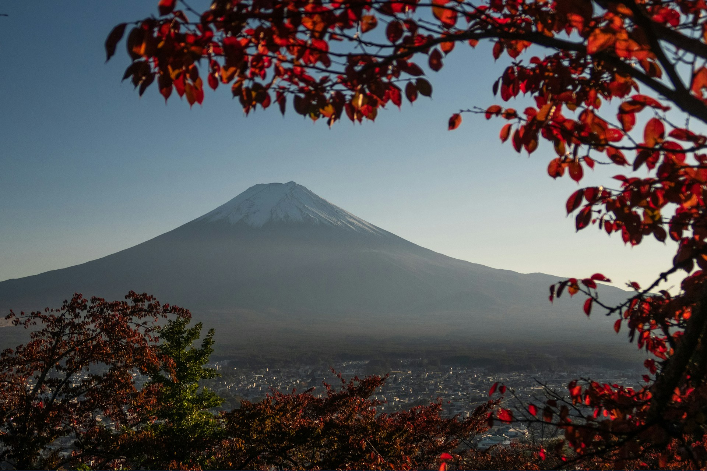

Ásia, o maior continente do mundo, é um destino repleto de mistérios, culturas vibrantes e paisagens deslumbrantes. Cada canto deste vasto território esconde segredos fascinantes que cativam os viajantes mais curiosos. Desde templos antigos a mercados animados, passando por praias paradisíacas e tradições milenares, a Ásia é um convite ao inesperado.
1. Templos que Contam Histórias Milenares
Na Ásia, cada templo tem uma história para contar. O majestoso Angkor Wat, no Camboja, é um testemunho da antiga civilização Khmer, com os seus intrincados relevos que revelam a fusão entre religião e arquitetura. Já no Japão, o Templo Kinkaku-ji, o Pavilhão Dourado de Quioto, reflete a tranquilidade de uma filosofia milenar enquanto brilha à luz do sol. Estes locais não são apenas edifícios, mas portais para tempos passados.
2. A Magia dos Mercados Locais
Os mercados asiáticos são uma explosão de cores, aromas e sabores. Em Bangkok, na Tailândia, o mercado flutuante Damnoen Saduak proporciona uma experiência única onde produtos frescos e iguarias locais são vendidos diretamente em barcos. Em Marrakech, o mercado de especiarias é um verdadeiro deleite sensorial, com perfumes que contam histórias de rotas comerciais antigas.
3. Natureza de Tirar o Fôlego
Se procura paisagens naturais de cortar a respiração, a Ásia oferece um leque infinito de opções. As montanhas de Zhangjiajie, na China, foram a inspiração para os cenários do filme "Avatar", com os seus picos flutuantes envoltos em neblina. As Ilhas Maldivas, por outro lado, são um paraíso tropical com praias de areia branca e águas cristalinas, perfeitas para relaxar ou praticar snorkel.
4. Tradições que Sobrevivem ao Tempo
A Ásia é o lar de tradições que resistiram à modernidade. O Festival Holi, na Índia, é uma celebração vibrante da primavera, onde as ruas se enchem de cores e alegria. Já na Coreia do Sul, o ritual de chá é um momento de serenidade e conexão, praticado há gerações. Conhecer estas tradições é uma forma de se conectar profundamente com as culturas locais.
5. Sabores que marcam para sempre
A gastronomia asiática é um capítulo à parte. Da sofisticada cozinha japonesa ao picante e aromático curry tailandês, cada prato conta uma história única. Não deixe de provar o pho, uma sopa tradicional vietnamita, ou o dim sum, os pequenos pratos recheados típicos da China. Explorar os sabores locais é uma viagem por si só.
6. Destinos Secretos para os Mais Aventureiros
Para além dos destinos turísticos mais conhecidos, a Ásia guarda segredos para quem procura fugir ao comum. A ilha de Batanes, nas Filipinas, é um refúgio pouco explorado com paisagens verdes de cair o queixo. Em Butão, o reino do "Felicidade Interna Bruta", os visitantes encontram paz em vilarejos pitorescos e trilhos montanhosos sagrados.
7. O Calor dos Habitantes Locais
Mais do que os lugares, são as pessoas que tornam a Ásia especial. Desde os sorrisos calorosos na Tailândia, conhecida como a "Terra dos Sorrisos", até à hospitalidade genuína dos monges tibetanos, a Ásia é um continente que acolhe os visitantes de braços abertos.
Seja a explorar as vibrantes cidades de Tóquio e Hong Kong, a tranquilidade dos campos de arroz em Bali ou o misticismo dos desertos da Mongólia, os segredos da Ásia estão prontos para serem descobertos. Prepare-se para uma aventura única, onde cada experiência será uma memória inesquecível. 🌏
Leave a Comment